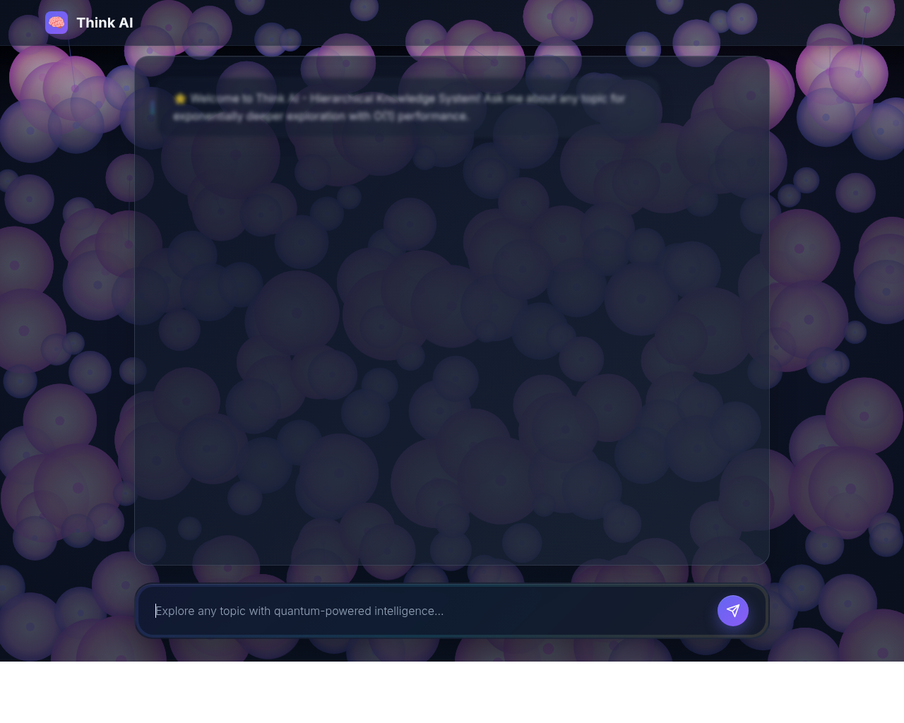
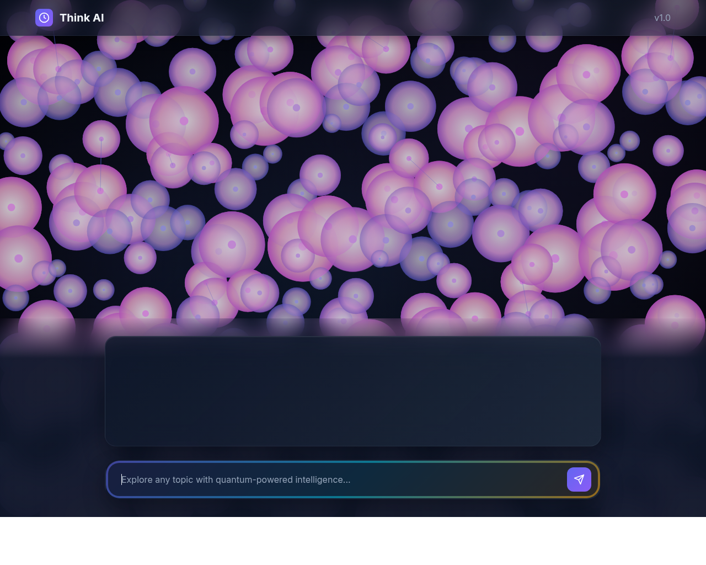

Test Date:
Purpose: Compare markdown rendering between custom parser and marked.js implementation

Uses custom markdown parsing logic implemented in JavaScript

Uses marked.js library with syntax highlighting via highlight.js